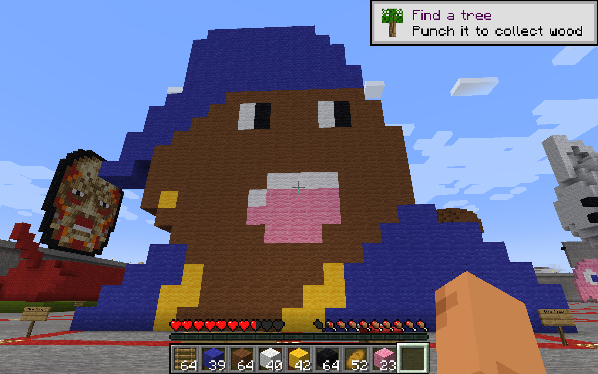
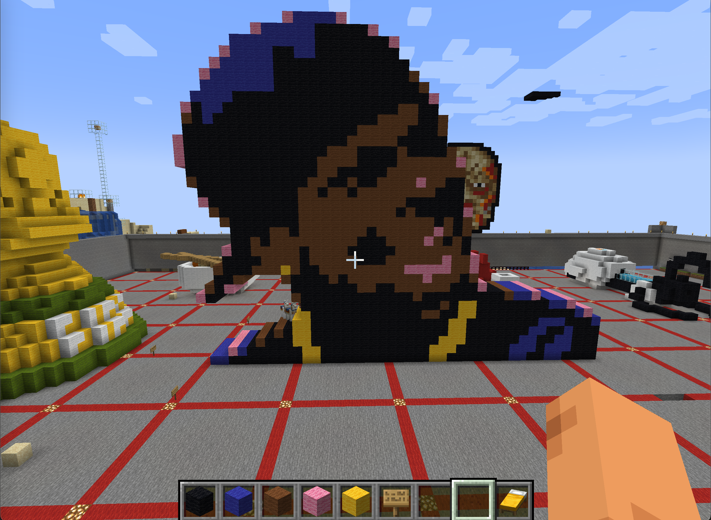
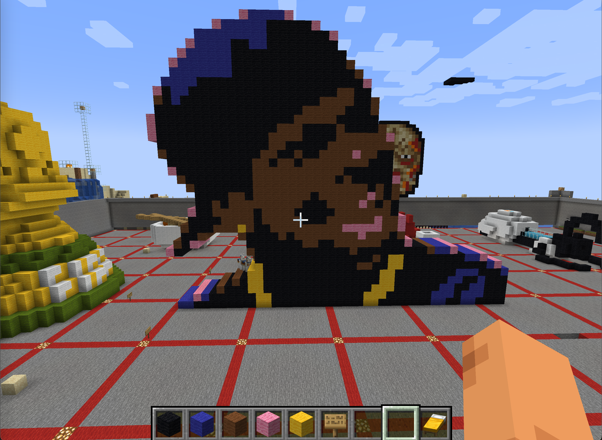

Minecraft Art
My sculpture is an image of a character from the movie Friday. The person above is Chris Tucker, who plays Smokey in the movie. If you're Black you know there are certain movies you HAVE to have seen or people will get on your case lol. Chris Tucker is a well known actor in the Black community and there's so much love from him. Some of his famous lines for the movie are: “And you know this … maaaaaan”, “You got knocked the f*** out.”, and “Heeeeeey, Ms. Parker.” I wanted my sculpture to look as close to the original image as possible, so I used Minecraft pixel art generator (https://www.scriptolab.com/minecraft-pixel-art-en.php) to turn my image into a map made up of Minecraft blocks. I made some adjustments so that his chain and earrings would show as well.
 
